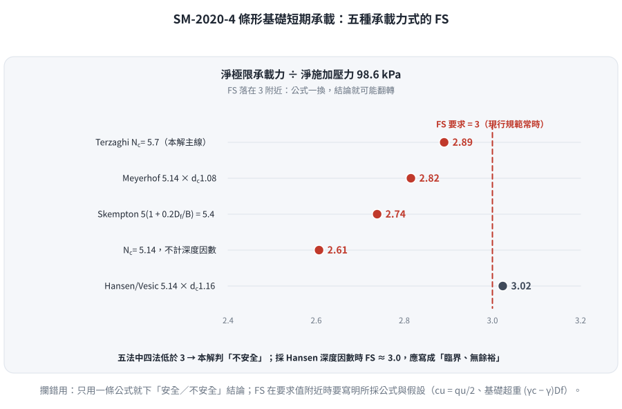

📄 題目正本：考卷原文・附圖・判讀清單（已確認）
SM-2020-4 題目正本
本檔只記錄考卷上寫了什麼、圖上畫了什麼，不含任何解法。解析見同資料夾
SM-2020-4.md。
判讀清單已確認（凍結）；本檔原則上不再修改（改動須回考卷原圖並記 log）。
| 項目 | 內容 |
|---|---|
| 考卷 | raw/exams/SM-2020_土壤力學與基礎設計.pdf 第 2 頁（頁次 2－2），第四題 |
| 考年 | 民國 109 年（2020） |
| 配分 | 25 分 |
| 附圖 | 無 |
| 判讀狀態 | 已確認（2026-11-15 關卡一：使用者授權依建議判讀確認；轉錄 2026-11-15；PyMuPDF 110 dpi 全頁目視，題文 170 dpi 放大，PDF 文字層核對；盲讀後才比對既有解析） |
1. 考卷原文（逐字）
四、一面牆將建構在一狹長的淺基礎上（基礎長遠大於 10 倍基礎寬），此基礎寬度為 1.25 公尺，厚度為 0.5 公尺厚且其底部置於地表下 0.5 公尺處。現地之土壤為粉土質黏土，其無圍壓縮強度為 100 kPa，此土壤之單位重為 18.8 kN/m³，地下水位在地表處。請以計算說明該基礎能否安全地承載 120 kN/m 之荷重？（25 分）
（「厚度為 0.5 公尺厚」照考卷原文。）
2. 考卷給的公式、附表與參數
- 基礎：條形（長遠大於 10 倍寬），寬 $B$ = 1.25 m，厚 0.5 m，底部在地表下 0.5 m（$D_f$ = 0.5 m，基礎頂與地表齊）。
- 土壤：粉土質黏土，無圍壓縮強度 $q_u$ = 100 kPa，單位重 18.8 kN/m³。
- 地下水位：地表。
- 荷重：120 kN/m。
- 沒有給：安全係數要求；承載力公式與因數；$\gamma_w$；混凝土單位重；荷重 120 kN/m 是否含基礎自重；土壤有效強度參數。
- 卷首注意事項：㈠可以使用電子計算器。㈡不必抄題，作答時請將試題題號及答案依照順序寫在試卷上，於本試題上作答者，不予計分。㈢本科目除專門名詞或數理公式外，應使用本國文字作答。
3. 附圖
無。
4. 判讀清單
| # | 項目 | 判讀 | 圖上／題文依據 | 把握 |
|---|---|---|---|---|
| 1 | 安全係數標準 | 考卷未給；以現行建築物基礎構造設計規範淺基礎常時 FS = 3 判斷「能否安全承載」 | 題文；卷首未給 | 不確定（影響答案，請確認）；使用者授權依建議確認（定案：依現行建築物基礎構造設計規範淺基礎常時 FS = 3） |
| 2 | 荷重 120 kN/m | 牆傳到基礎的荷重；考卷未說明是否含基礎自重（混凝土單位重亦未給） | 題文 | 不確定（解讀）；使用者授權依建議確認（定案：120 kN/m 為牆傳來荷重，基礎超重以（γc − γ）Df 另計（γc 自設 24 kN/m³）） |
| 3 | 強度參數 | 飽和粉土質黏土短期不排水：$c_u = q_u/2$ = 50 kPa、$\phi$ = 0 | 題文給無圍壓縮強度 | 確定（解讀） |
| 4 | 基礎幾何 | 條形基礎，$B$ = 1.25 m、$D_f$ = 0.5 m，基礎厚 0.5 m → 基礎頂在地表 | 題文 | 確定 |
| 5 | 單位重 | 18.8 kN/m³，水位在地表，視為飽和單位重 | 題文 | 確定（解讀） |
| 6 | 所求 | 以計算說明能否安全承載 120 kN/m | 題文 | 確定 |
| 7 | 考卷沒有給 | FS、承載力因數、$\gamma_w$、混凝土單位重 | 全題 | 確定 |
轉錄：2026-11-15（SM-U2-1 題目正本推廣・批 1）
確認：2026-11-15 使用者授權依建議判讀確認（SM-U2-1 題目正本推廣・批 1，關卡一；使用者指示「要確認的依你建議」）
考題編號：SM-2020-4
主分類： SM-U2-1 淺基礎之支承力與沉陷量
副分類： 無
分析法： 總應力法
標籤： Terzaghi承載力公式 承載力因數 不排水剪力強度 容許承載力 條形基礎 淨承載力
1. 題目（考卷原文見題目正本）
考卷原文、公式／附表、附圖與判讀清單（已確認）見
SM-2020-4-problem.md。本節只列解題時最容易讀錯的地方與本解使用的記號；題意以題目正本為準。
常見誤讀
| 項目 | 正確判讀 | 常見誤讀 |
|---|---|---|
| 安全係數 | 考卷未給，依現行建築物基礎構造設計規範淺基礎常時 FS = 3（題目正本 #1，已確認） | 只算極限承載力、不比較 FS |
| 強度參數 | $c_u=q_u/2$ = 50 kPa、$\phi$ = 0（#3） | 把無圍壓縮強度 100 kPa 直接當 $c_u$ |
| 基礎超重 | 120 kN/m 為牆荷重；基礎取代原土的超重以 $(\gamma_c-\gamma)D_f$ 另計，$\gamma_c$ 自設 24（#2，已確認） | 把基礎自重整個加上而不扣開挖土重 |
本解記號： $q_{ult,net}$ 淨極限承載力；$q_{a,net}$ 淨容許承載力；$q_{app,net}$ 實際淨施加壓力；$S_u$ 不排水剪力強度。
2. 考題核心精神與出題者意圖 (Core Concepts & Examiner's Intent)
本題旨在測驗考生對於飽和黏性土中淺基礎短期承載力的分析能力，出題者意圖包含以下幾個核心層面：
- 強度參數的轉換：從無圍壓縮試驗（Unconfined Compression Test）的結果 $q_u$，判斷並求取黏土在不排水條件下的未壓密不排水剪力強度 $S_u$（或 $c_u$）。
- 分析方法的選擇：地下水位在地表，且為粉土質黏土，短期承載力由不排水狀態（$\phi_u = 0$）控制，需使用總應力法進行分析。
- 承載力公式的應用：辨識「狹長淺基礎」（條形基礎）幾何條件，選擇適當的承載力公式（如 Terzaghi 條形基礎公式），並理解在 $\phi = 0$ 時承載力係數的對應值（$N_c = 5.7$、$N_q = 1.0$、$N_\gamma = 0$）。
- 淨載重與淨承載力的比較：了解實際加諸於基礎底面的載重（考量外加載重與基礎自重）與基礎容許承載力的比較邏輯，利用「淨（net）」的概念評估安全性。
3. 解題戰略地圖與陷阱分析 (Strategic Roadmap & Trap Analysis)
作戰計畫：
- 依據無圍壓縮強度 $q_u$，推算土壤的不排水剪力強度 $S_u = q_u / 2$。
- 採用 Terzaghi 條形基礎極限承載力公式，計算總極限承載力 $q_{ult}$ 或淨極限承載力 $q_{ult,net}$。
- 採用適當的基礎設計安全係數（一般取 $FS = 3.0$），求得容許淨承載力 $q_{a,net}$。
- 計算實際施加於地基的淨載重強度 $q_{app,net}$（外加牆荷重除以基礎寬度，並斟酌是否計入混凝土與原土壤的單位重差異）。
- 比較 $q_{app,net}$ 與 $q_{a,net}$，判斷是否安全。
陷阱分析：
-
陷阱一：水位的影響（總應力 vs 有效應力）
許多考生看到「地下水位在地表處」，會直覺將載重項或土重項扣除水浮力。但在 $\phi_u = 0$ 的不排水分析（總應力法）中，承載力的抵抗來自於 $S_u$，且 $N_\gamma = 0$，上覆土重 $q$ 提供的是絕對總應力，不需轉為有效應力（若比較淨承載力，上覆水壓力項相互抵銷）。 -
陷阱二：忽略基礎自重與開挖土重的差異
題目敘述基礎厚度為 0.5m，底部置於地表下 0.5m，表示基礎頂齊平地表。牆荷重 120 kN/m 直接作用於基礎上，計算傳遞至基礎底部的淨壓力時，嚴格來說需計入混凝土（$\approx 24 \text{kN/m}^3$）取代原地表土（$18.8 \text{kN/m}^3$）所增加的額外載重。 -
陷阱三：安全係數的設定
題目未明示安全係數。在淺基礎設計中，常規安全係數必須由考生自行給定並說明（合理假設 $FS = 3.0$），這是驗證基礎是否「安全」的判斷基準。
3.5 變數層次分析 (Variable Hierarchy Analysis)
最終目標
計算淺基礎之容許承載力與實際施加壓力，並判斷基礎是否安全。
本題關鍵公式（依計算順序）
-
Step 1：不排水剪力強度
$$ S_u = \frac{q_u}{2} $$ -
Step 2：淨極限承載力 (Terzaghi 條形基礎)
$$ q_{ult,net} = \boxed{S_u} N_c $$ -
Step 3：容許淨承載力
$$ q_{a,net} = \frac{\boxed{q_{ult,net}}}{FS} $$ -
Step 4：實際淨載重強度
$$ q_{app,net} = \frac{Q}{B} + (\gamma_c - \gamma_{sat}) D_f $$ -
Step 5：安全性檢核
$$ \text{Check: } \boxed{q_{app,net}} \le \boxed{q_{a,net}} $$
L1：題目直接給定
| 符號 | 數值 | 說明 |
|---|---|---|
| $B$ | 1.25 m | 基礎寬度 |
| $L/B$ | $\to \infty$ | 狹長淺基礎（條形基礎） |
| $D_f$ | 0.5 m | 基礎埋置深度 |
| $t$ | 0.5 m | 基礎厚度 |
| $q_u$ | 100 kPa | 粉土質黏土無圍壓縮強度 |
| $\gamma_{sat}$ | 18.8 $\text{kN/m}^3$ | 飽和土壤單位重 |
| $D_w$ | 0 m | 地下水位深度 |
| $Q$ | 120 kN/m | 牆身傳遞之每單位長度荷重 |
L2：需知識點推導
承載力計算與檢核
| 符號 | 公式／來源 | 卡關? |
| --- | --- | --- |
| $S_u$ | $S_u = q_u / 2$ | |
| $N_c$ | $N_c = 5.7$ (Terzaghi 條形基礎, $\phi=0$) | |
| $q_{ult,net}$ | $q_{ult,net} = c N_c = S_u N_c$ | |
| $q_{a,net}$ | $q_{a,net} = q_{ult,net} / FS$ (假設 FS=3.0) | |
| $q_{app,net}$ | $q_{app,net} = Q/B + (\gamma_c - \gamma_{sat})D_f$ | |
L3：深層知識（不懂就卡住）
| 知識點 | 說明 | 卡關? |
|---|---|---|
| $\phi_u=0$ 分析 | 飽和黏土在短期載重下屬不排水狀態，內摩擦角視為零，此時 $N_q=1$、$N_\gamma=0$。 | |
| 淨承載力概念 | 淨極限承載力去除了開挖土重的影響（$q_{ult,net} = q_{ult} - q$），能直接對應結構物外加淨載重。 |
4. 步驟化詳細計算過程 (Step-by-Step Detailed Calculation)
Step 1：推算土壤的不排水剪力強度
現地為粉土質黏土，且地下水位在地表，土壤呈飽和狀態。
在快速加載的短期條件下，應採不排水總應力分析（$\phi_u = 0$ 狀態）。
由無圍壓縮強度 $q_u$ 計算不排水剪力強度 $S_u$（即凝聚力 $c_u$）：
$$
S_u = c_u = \frac{q_u}{2} = \frac{100 \text{ kPa}}{2} = 50 \text{ kPa}
$$
Step 2：計算基礎之淨極限承載力
基礎為狹長淺基礎（條形基礎），採用 Terzaghi 承載力公式。
對於 $\phi_u = 0^\circ$ 的飽和黏土，Terzaghi 承載力係數為：
$$ N_c = 5.7, \quad N_q = 1.0, \quad N_\gamma = 0 $$
極限承載力 $q_{ult}$ 計算公式為：
$$
q_{ult} = c_u N_c + q N_q + 0.5 \gamma B N_\gamma
$$
由於 $N_q = 1.0, N_\gamma = 0$，且上覆總壓力 $q = \gamma_{sat} D_f$：
$$
q_{ult} = c_u N_c + \gamma_{sat} D_f
$$
基礎底面之「淨極限承載力（Net Ultimate Bearing Capacity）」$q_{ult,net}$ 為：
$$
q_{ult,net} = q_{ult} - q = c_u N_c
$$
代入數值：
$$
q_{ult,net} = 50 \times 5.7 = 285 \text{ kPa}
$$
Step 3：決定容許淨承載力
基礎設計一般要求之安全係數為 $FS \ge 3.0$。
計算容許淨承載力 $q_{a,net}$：
$$
q_{a,net} = \frac{q_{ult,net}}{FS} = \frac{285}{3.0} = 95 \text{ kPa}
$$
Step 4：計算實際施加於地基之淨載重強度
牆體帶來之外加荷重為 $Q = 120 \text{ kN/m}$，平均分布於基礎寬度 $B = 1.25 \text{ m}$，此外加應力為：
$$
q_{wall} = \frac{Q}{B} = \frac{120}{1.25} = 96 \text{ kPa}
$$
基礎厚度與埋置深度均為 0.5 m，意味著原有的土壤被混凝土基礎所取代。
假設混凝土單位重 $\gamma_c \approx 24 \text{ kN/m}^3$：
由基礎結構自重取代原土壤所造成的額外淨壓力增量 $\Delta q_{base}$ 為：
$$
\Delta q_{base} = (\gamma_c - \gamma_{sat}) \times D_f = (24.0 - 18.8) \times 0.5 = 5.2 \times 0.5 = 2.6 \text{ kPa}
$$
總實際淨載重強度 $q_{app,net}$：
$$
q_{app,net} = q_{wall} + \Delta q_{base} = 96 + 2.6 = 98.6 \text{ kPa}
$$
(註：即便為簡化計算而不計入混凝土與土壤單位重的差異，即假設 $\Delta q_{base} = 0$，實際淨載重強度 $q_{app,net} = 96 \text{ kPa}$)
Step 5：安全性檢核與結論
比較實際淨載重強度與容許淨承載力：
$$
\boxed{q_{app,net} = 98.6 \text{ kPa} \quad (若簡化為 96 \text{ kPa}) > q_{a,net} = 95 \text{ kPa}}
$$
由於實際載重強度大於容許淨承載力（即實際安全係數 $FS \approx 2.89 < 3.0$），因此：
$$
\text{\textbf{結論：該基礎無法安全地承載 120 kN/m 之荷重。}}
$$
5. 關鍵爭議點與進階探討 (Critical Issues & Advanced Discussion)
-
安全係數 (FS) 的選擇
本題未給定要求之安全係數，實務上淺基礎設計皆取 $FS = 3.0$。將本題的安全係數回推：$FS_{actual} = \frac{q_{ult,net}}{q_{app,net}} = \frac{285}{98.6} \approx 2.89$（若不計混凝土重差異則為 $285 / 96 \approx 2.97$）。兩者均小於 3.0，因此認定為不安全。作答時必須明確寫出「假設容許安全係數 $FS=3.0$」作為判斷的依據。 -
承載力公式的選用（Terzaghi vs Meyerhof）
- 若採用 Terzaghi 公式，如上述計算 $N_c = 5.7$，容許淨承載力為 95 kPa，結論為「不安全」。
- 若採用 Meyerhof 或 Hansen 等一般承載力公式，條形基礎之 $N_c = 5.14$，並需考慮深度修正因子 $d_c$。以 Meyerhof 為例：
$$ d_c = 1 + 0.2 \frac{D_f}{B} = 1 + 0.2 \left( \frac{0.5}{1.25} \right) = 1.08 $$
$$ q_{ult,net} = c_u N_c d_c = 50 \times 5.14 \times 1.08 \approx 277.56 \text{ kPa} $$
$$ q_{a,net} = \frac{277.56}{3} \approx 92.52 \text{ kPa} $$
比較結果為 $96 \text{ kPa} > 92.52 \text{ kPa}$，結論依然是「不安全」。 - 實務建議：在國家考試中，針對「狹長淺基礎」且未特別指明時，直接選用 Terzaghi 條形基礎公式（$N_c=5.7$）最簡明且被廣泛接受；若能在計算後加註 Meyerhof 方法亦不安全，更能展現觀念的全面性。
-
淨承載力 (Net) 與總承載力 (Gross) 觀念的區辨
基礎承載力的比較必須在相同的基準面上。本解答使用「淨載重」與「容許淨承載力」作比較，排除了「開挖前後地層本身土重 ($q$)」的相互抵銷干擾，這是最不容易出錯且觀念最清晰的標準作法。 -
結論對承載力公式敏感（2026-11-15 盲解比對補註）：FS 落在 3 附近，換公式可能翻轉結論。以淨施加壓力 98.6 kPa 計：Terzaghi $N_c$ = 5.7（本解）2.89；Meyerhof $d_c=1+0.2D_f/B$ = 1.08 → 2.82；Skempton $N_c=5(1+0.2D_f/B)$ = 5.4 → 2.74；$N_c$ = 5.14 不計深度因數 → 2.61；Hansen／Vesic 型 $d_c=1+0.4D_f/B$ = 1.16 → $q_{ult,net}$ = 298.1 kPa、FS = 3.02（獨立盲解主線，剛好滿足）。五法中四法 < 3，本解維持「不安全」；若採 Hansen 深度因數，應寫成「FS ≈ 3.0，臨界、無餘裕」。另若 120 kN/m 已含基礎重，Terzaghi FS = 285/96 = 2.97，Hansen 型 3.11。作答時寫明所採公式、FS 要求與自重假設。

圖 1 五種承載力式的 FS 與要求值 3 的相對位置（淨施加壓力 98.6 kPa）。攔下「只用一條公式就下結論」的錯誤：本題 FS 落在 3 附近，換公式就可能由不安全變成剛好安全。
修正日期：2026-11-15（§1 改為指向題目正本 SM-2020-4-problem.md；§5 補註承載力公式敏感度（FS 在 3 附近）（盲解比對後補充，答案未變）；§5 第 4 點 補解題圖解 figs/SM-2020-4-fig-1-fs-methods.svg（圖解補繪）；非勘誤）